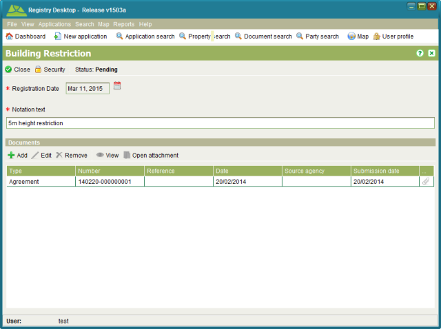

The Mortgage RRR screen is used to display information for mortgages. It can be accessed
from the Rights/Restrictions tab on the Property Details screen by selecting a Mortgage RRR
and clicking  View or
View or  Edit.
Edit.

Mortgage RRR
You can enter the registration date, expiration date, mortgage type, name of the lender (e.g. bank), the mortgage amount, the ranking for the mortgage and the interest rate. Relevant documents such as the mortgage contract can be linked to the RRR as well.
To create, change or cancel a mortgage RRR you must first lodge an application with the appropriate service e.g. Register Mortgage, New Freehold Title, Registration on Title, Convert to Digital Title, Vary Mortgage, Vary Right (General) or Remove Right (General).